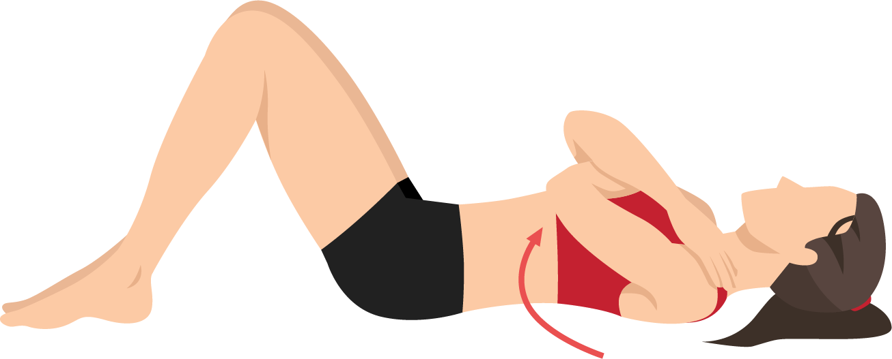

- ابدأ بمحاولة إغلاق فتحة مجرى البول والمهبل والمستقيم وشدها قدر الإمكان عن طريق سحبها لأعلى وللداخل.
- استمر على هذه الوضعيه من 3-5 ثوان مع التأكد من عدم حبس انفاسك
- ثم استرخى لمده 10 ثوان
- كرر نفس التمرين 10 مرات
- يمكنك ممارسه هذا التمرين لمده اقصاها 10 ثوان
- و يمكن فعل ذلك من مرتين لاربع مرات فى اليوم